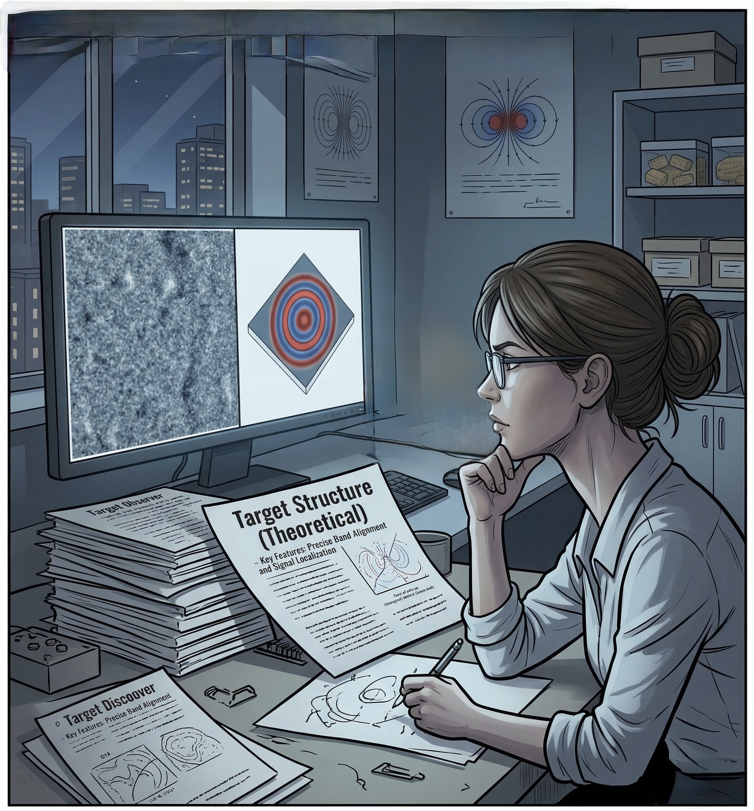
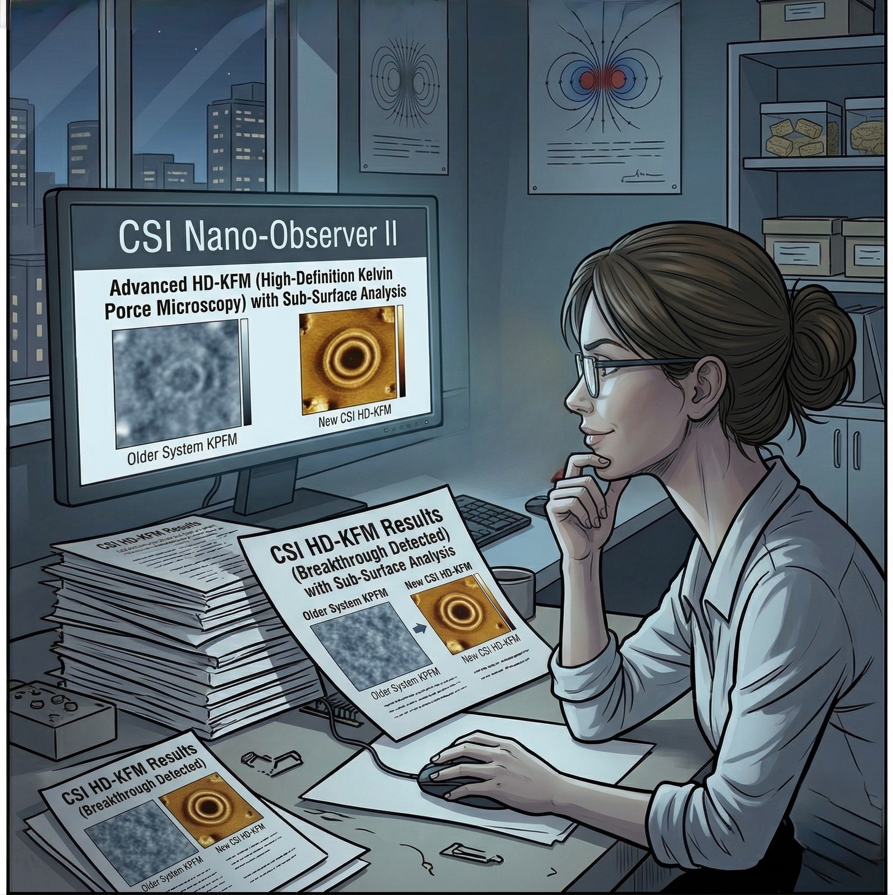
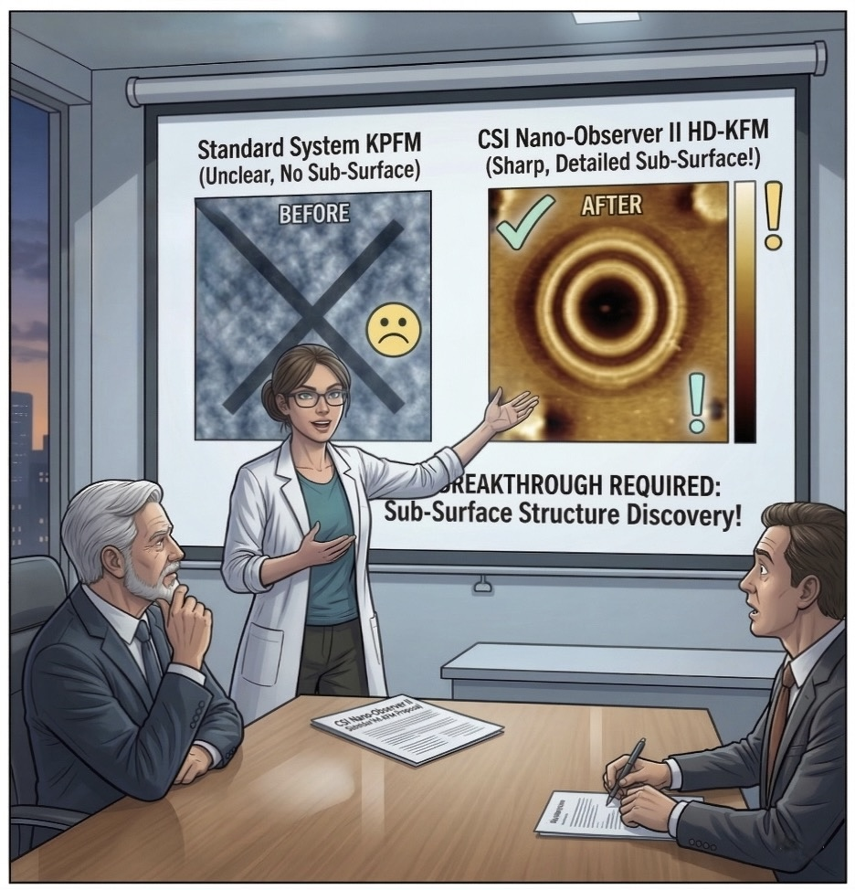
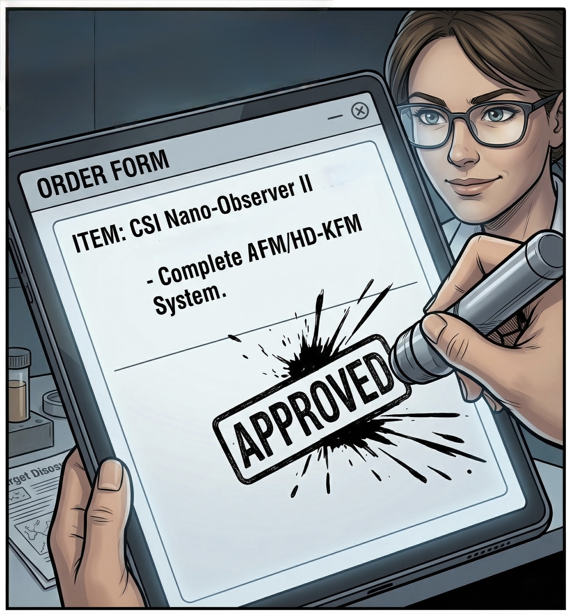
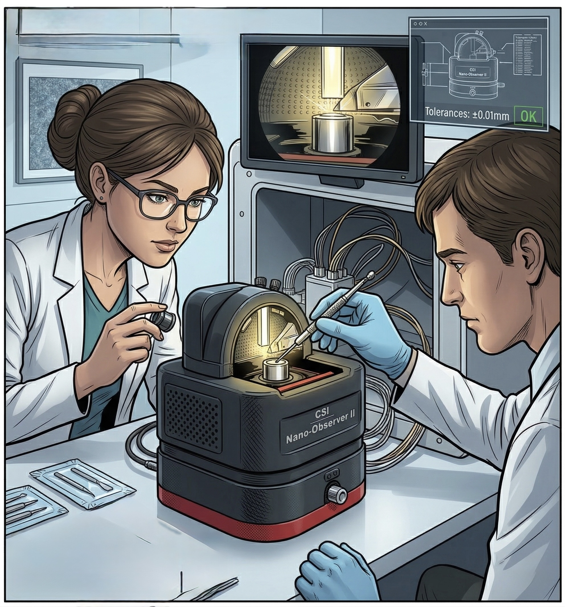
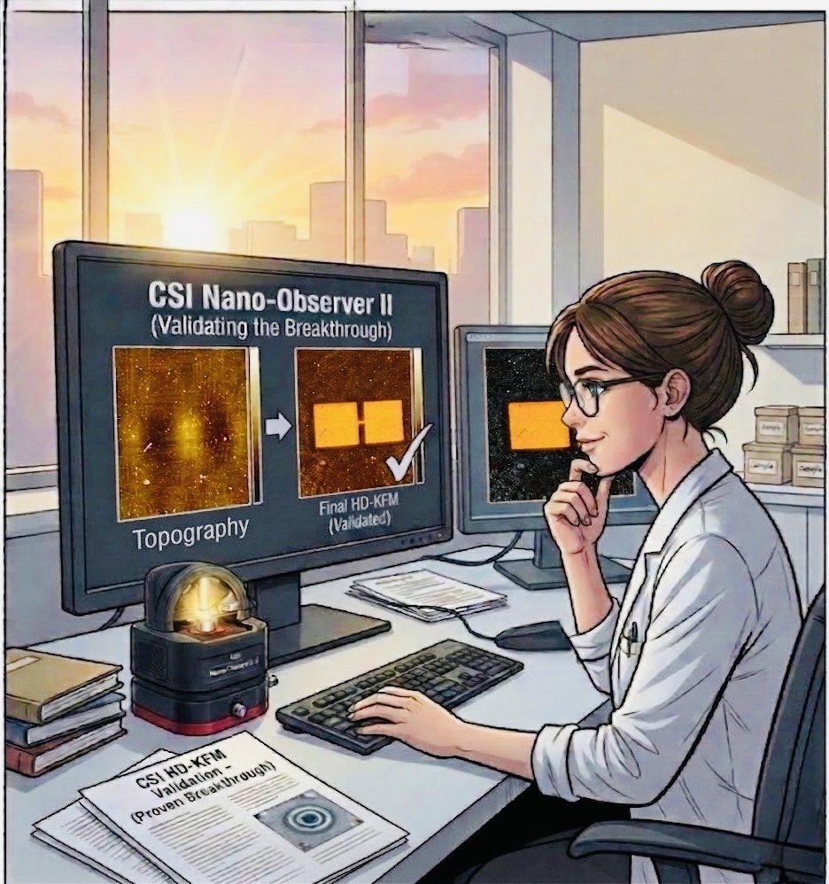

THE KELVIN
CHRONICLES
A High-Definition KFM Adventure
★ WHEN STANDARD KPFM JUST ISN'T ENOUGH ★
1

🌙 Late night. Dr. Sarah Chen has been staring at this image for three hours. It hasn't improved.
Dr. Chen (thinking)
All noise. No structure. No sub-surface information. Just... gray static. My standard KPFM can't resolve anything below the surface.
Dr. Chen
I KNOW the ring structures are in there. WHY can't I see them?!
2

📄 The theoretical models are clear. Concentric ring structures, precise bond alignment, localized signals. They must be there.
❌ WHAT SHE GETS
Grainy noise. No sub-surface features. No spatial resolution. Standard KPFM at its limit.
🎯 WHAT SHE NEEDS
Sharp concentric rings. Precise bond alignment. Signal localization down to the nanoscale.
Dr. Chen (thinking)
Theory says these structures exist. Every simulation confirms it. My instrument is the bottleneck — not my science.
3

🔍 A paper drops into her inbox. "Sub-Surface Analysis via HD-KFM — CSI Nano-Observer II." She clicks.
⚡ CSI HD-KFM — HIGH-DEFINITION KELVIN FORCE MICROSCOPY
Resolution vs Standard KPFM10× SHARPER
Sub-Surface AnalysisYES — unique capability
Noise FloorDramatically reduced
Ring Structure VisibilityFully resolved
Dr. Chen
Old system... blurry gray blob. CSI HD-KFM... sharp golden rings, sub-surface layers fully visible. This isn't just an upgrade. This is a completely different instrument.
Dr. Chen
I need to take THIS to management. NOW.
4

📊 The boardroom. Dr. Anderson (Lead Approver) and Mr. Thompson (Finance) study the comparison slide.
Dr. Chen
Left: our current system. Right: CSI HD-KFM. The sub-surface ring structures are invisible without it. This is a breakthrough we literally cannot make with existing equipment.
Dr. Anderson
The data speaks for itself. What's the procurement timeline?
5

✦ APPROVED ✦
✅ CSI Nano-Observer II — Complete AFM/HD-KFM System. Budget approved. Order placed.
Dr. Chen (thinking)
Three years of chasing ghosts in the noise floor... that ends today.
Dr. Chen
FINALLY!! Let's get this thing installed before anyone changes their mind!
6

CALIBRATING...
🔧 Installation day. Every component checked. Tolerances: ±0.01mm. The team works with surgical precision.
Colleague
Optical alignment locked. HD-KFM module seated. Tolerances confirmed within spec — we're green across the board.
Dr. Chen
Good. Load the first sample. The one that's been sitting in the queue for six months.
7

★ BREAKTHROUGH VALIDATED!! ★
🏆 Dawn breaks. The screen glows. Low-res KPFM — gray noise. CSI HD-KFM — perfect golden rings. Sub-surface structures, fully resolved.
Dr. Chen
Original data versus HD-KFM... the ring surface structures, the magnetic domains, the sub-surface layers — all confirmed. The theory was right all along. We just couldn't see it.
Dr. Chen
The paper just wrote itself. We're submitting by Friday!!
— THE END —
Moral of the story: The structures were always there.
You just needed an instrument worthy of finding them.
CSI Nano-Observer II · HD-KFM · High-Definition Kelvin Force Microscopy · Sub-Surface Analysis Unlocked.